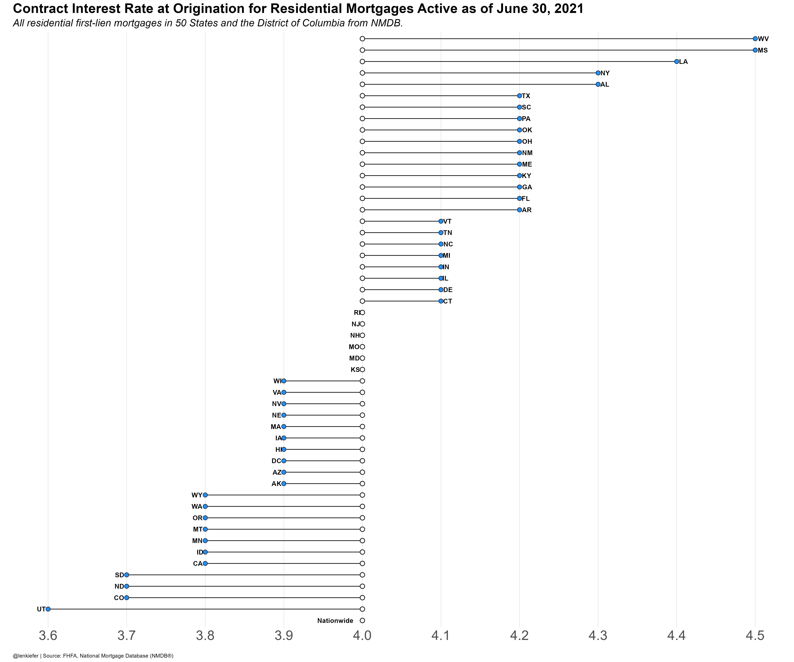
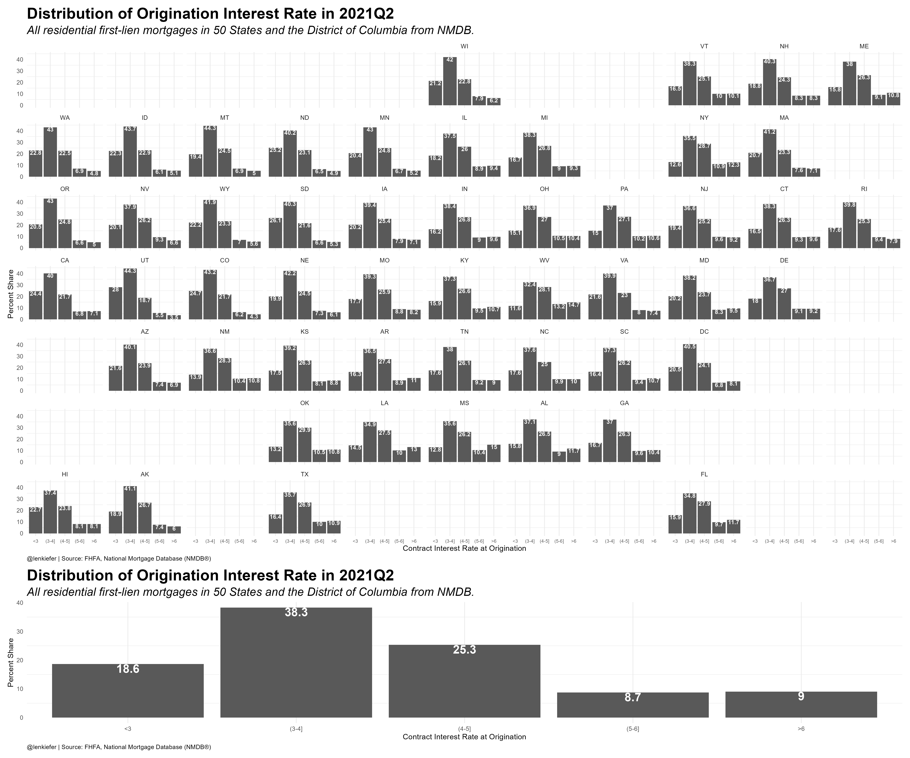

On Twitter Ali Wolf asks a question:
I know there's a stat out there that tracks what % of mortgaged homeowners have a rate below 4%. Does anyone have it or know where to find it?
— Ali Wolf (@AliWolfEcon) November 9, 2021
Mortgage rates, that’s something I know a little about.
Fortunately there is some publicly available data that can answer this question. The National Mortgage Database publishes some aggregate data on outstanding mortgages.
Using a snippet of R code I picked up from Jonathan Regenstein:
NY Fed inflation expectations dropped today. here's the #rstats code to download and chart from the @NYFedResearch website pic.twitter.com/dQui0t4Jde
— Jonathan Regenstein (@jkregenstein) September 13, 2021
we can download the data direct from the FHFA website in R and plot our data.
First we can plot the average origination interest rate on outstanding mortgages. The US average is 4% in 2021Q2.

We can also compare the distribution of outstanding rates by state.

Here’s R code for the charts.
library(geofacet)
library(tidyverse)
library(readxl)
library(lubridate)
url1 <-"https://www.fhfa.gov/DataTools/Downloads/Documents/"
url2 <- "NATIONAL-MORTGAGE-DATABASE-(NMDB)-AGGREGATE-DATA/National-State-Statistics-for-Outstanding-Residential-Mortgages-in-the-United-States-2021Q2.xlsx"
destfile <- "nmdb2021Q3.xlsx"
curl::curl_download(paste0(url1,url2),destfile)
nmdb_data <-
read_excel(destfile,sheet=3,skip=7) %>%
rename(geo=1,
avg_rate=11) %>%
select(geo,avg_rate) %>%
mutate(id=case_when(geo=="Nationwide"~0,
T~avg_rate)) %>%
mutate(geof=fct_reorder(geo,id))
nmdb_data$us_rate=filter(nmdb_data,geo=="Nationwide")$avg_rate
# First Chart ----#
ggplot(data=nmdb_data,
aes(y=geof, x=avg_rate))+
geom_segment(aes(yend=geof,xend=us_rate))+
geom_point(shape=21, fill="dodgerblue",size=3)+
geom_point(shape=21, fill="white",aes(x=us_rate),size=3,stroke=0.75)+
geom_text(aes(label=geo,hjust=ifelse(avg_rate>us_rate,-0.25,1.25)),
fontface="bold")+
scale_x_continuous(breaks=seq(3.5,4.5,.1))+
theme_minimal()+
theme(legend.position="top",
legend.key.width=unit(2,"cm"),
plot.caption=element_text(hjust=0),
axis.text=element_text(size=rel(2)),
axis.text.y=element_blank(),
panel.grid.minor.x=element_blank(),
panel.grid.major.y=element_blank(),
plot.background = element_rect(fill="white",color=NA),
panel.background = element_rect(fill="white",color=NA),
plot.subtitle=element_text(face="italic",size=rel(1.5)),
plot.title=element_text(size=rel(2),face="bold"))+
labs(x="",y="",
title="Contract Interest Rate at Origination for Residential Mortgages Active as of June 30, 2021",
subtitle="All residential first-lien mortgages in 50 States and the District of Columbia from NMDB.",
caption="@lenkiefer | Source: FHFA, National Mortgage Database (NMDB®)")
nmdb_data2 <-
read_excel(destfile,sheet=3,skip=7) %>%
rename(geo=1,
lt3=12,
b34=13,
b45=14,
b56=15,
gt6=16) %>%
select(geo,lt3,b34,b45,b56,gt6) %>%
pivot_longer(cols=-geo)
nmdb_data2 <- mutate(nmdb_data2,
rf=factor(name,levels=c("lt3","b34","b45","b56","gt6")))
# Second Chart ----#
gmap1 <-
ggplot(data=nmdb_data2,aes(x=rf,y=value))+geom_col()+facet_geo(~geo)+
scale_x_discrete(labels=c("<3","(3-4]", "(4-5]","(5-6]", ">6"))+
geom_text(aes(label=value),color="white",vjust=1,fontface="bold",size=3)+
theme_minimal()+
theme(legend.position="top",
legend.key.width=unit(2,"cm"),
plot.caption=element_text(hjust=0),
axis.text.x=element_text(size=rel(0.75)),
panel.grid.minor.x=element_blank(),
panel.grid.major.y=element_blank(),
plot.background = element_rect(fill="white",color=NA),
panel.background = element_rect(fill="white",color=NA),
plot.subtitle=element_text(face="italic",size=rel(1.5)),
plot.title=element_text(size=rel(2),face="bold"))+
labs(title="Distribution of Origination Interest Rate in 2021Q2",
x="Contract Interest Rate at Origination",
y="Percent Share",
subtitle="All residential first-lien mortgages in 50 States and the District of Columbia from NMDB.",
caption="@lenkiefer | Source: FHFA, National Mortgage Database (NMDB®)")
gbar2<-
ggplot(data=filter(nmdb_data2,geo=="Nationwide"),aes(x=rf,y=value))+geom_col()+
geom_text(aes(label=value),color="white",vjust=1,fontface="bold",size=6)+
scale_x_discrete(labels=c("<3","(3-4]", "(4-5]","(5-6]", ">6"))+
theme_minimal()+
theme(legend.position="top",
legend.key.width=unit(2,"cm"),
plot.caption=element_text(hjust=0),
axis.text.x=element_text(size=rel(1)),
panel.grid.minor.x=element_blank(),
panel.grid.major.y=element_blank(),
plot.background = element_rect(fill="white",color=NA),
panel.background = element_rect(fill="white",color=NA),
plot.subtitle=element_text(face="italic",size=rel(1.5)),
plot.title=element_text(size=rel(2),face="bold"))+
labs(title="Distribution of Origination Interest Rate in 2021Q2",
x="Contract Interest Rate at Origination",
y="Percent Share",
subtitle="All residential first-lien mortgages in 50 States and the District of Columbia from NMDB.",
caption="@lenkiefer | Source: FHFA, National Mortgage Database (NMDB®)")
gmap1/gbar2+plot_layout(heights=c(4,1))